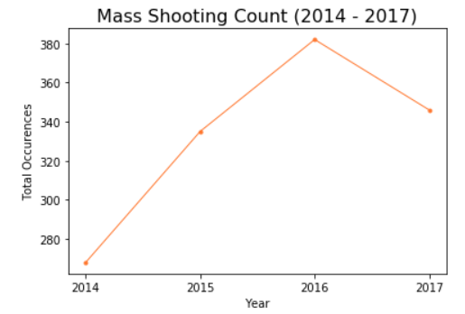

Mass Shootings in The US
Purpose

Key Questions:
- Have mass shooting rates increased over the years?Check out What we found!
- Where are mass shootings happening most often and where are they the deadliest?
- Does gun legislation have any relationship to number of mass shootings?
- Does hate group activity have any relationship with number of mass shootings?
Data Sources:
Data Collection Period:
2014 - 2017